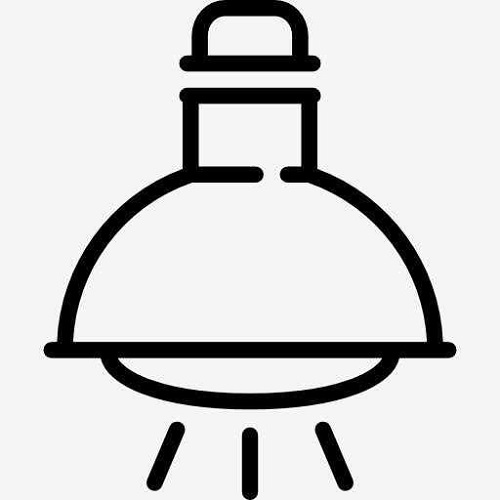

<div class="d-flex justify-content-center" *ngIf="aaa==1">
    
</div>
<div *ngIf="aaa==0" class="d-flex justify-content-center">
    
</div>
<div class="d-flex justify-content-center">
    <button class="btn btn-success" (click)="turnOn()">打开</button>
    <button class="btn btn-warning" (click)="turnOff()">关闭</button>
    <button class="btn btn-primary" [routerLink]="['../product']">返回</button>
</div>